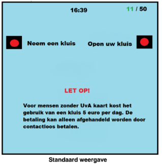
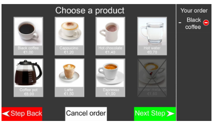
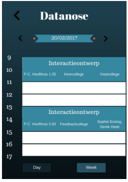
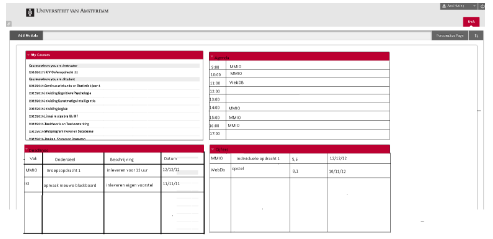

Voor deze groepsopdracht hebben wij verbeteringen bedacht en uitgewerkt voor de kluisjes op het science park. De huidige kluisjes zijn vaak kapot en studenten zijn altijd lang aan het zoeken naar een kluisje omdat ze meestal allemaal bezet zijn. Wij willen deze problemen aanpakken door een centrale controle zuil te plaatsen voor alle kluisjes. Deze oplossing is minder vatbaar voor kapotte sloten. Door de centrale zuil kunnen studenten ook snel zien of er nog kluisjes vrij zijn. Kluisjes zullen niet meer gratis zijn voor mensen die niet aan de UvA gerelateerd zijn waardoor er meer ruimte vrij komt voor studenten en dergelijke.

klik hier voor het originele document
Voor deze groepsopdracht hebben wij ons gericht op het verbeteren van de nieuwe koffie automaten van de UvA. Wij hebben eerst uitgezocht wat de gebreken zijn van de huidige koffie automaten aan de hand van user stories en analyse van onze eigen interactie met de koffie automaten. Aan de hand van deze informatie hebben wij een aantal aanpassingen voorgesteld aan de machines zelf en aan de interface.

klik hier voor het originele document
Deze week hebben wij als groepsopdracht Datanose onder de loep genomen en zijn wij verbeteringen gaan bedenken voor dit rooster programma. Aan de hand van user story's zijn wij verbeteringen gaan maken aan Datanose waardoor de gebruiksvriendelijkheid en functionaliteit toeneemt. Buiten toevoegingen hebben wij ook verbeteringen aan datanose gemaakt.

klik hier voor het originele document
Voor groepsopdracht vier hebben wij getracht verbeteringen te maken aan Blackboard. Wij hebben eisen voor Blackboard opgesteld aan de hand van User stories en onze eigen ervaringen met het programma. Onze aanpassingen aan de homescreen van Blackboard moeten ervoor zorgen dat Blackboard een gebruiksvriendelijk en algemeen nuttig middel wordt voor studenten.

klik hier voor het originele document